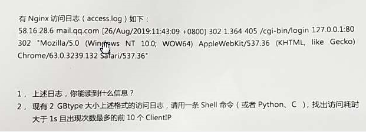
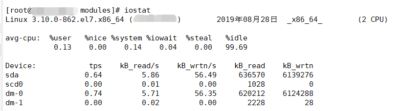

笔试题
（1）硬链接和软链接
（2）p、s
b block 块
c char 字符
l link 链接
d 文件夹
s sock socket
p pipe 管道
（3）
（1）CLOSE-WAIT
（2）25
（3）计划任务,iptables策略
0 8-18 * * 1-5 base/root/iptables.sh
（4）STP:生成树协议
（1）错误日志、二进制日志、慢日志、

(1)ip地址、域名、时间、状态码、时间、状态码、url、
(2)cat access.log |awk ‘ $9>200 {print $1}’ |sort|uniq -c |sort -rn|head
将本地一个name.txt 导入脚本中，创建name.txt中的新用户并生成随机密码，将对用的随机密码和用户名导入新文本newname.txt中
cat create_user.sh
1 |
|
系统性能监控
进程查看命令
静态查看进程的信息，某一个时刻进程的信息
https://www.cnblogs.com/wxgblogs/p/6591980.html
1 | [root@LNMP ~]# ps -l |
由于 ps 能够支持的系统类型相当的多，所以他的参数多的离谱，而且有没有加上 - 差很多！
将目前属于您自己这次登入的 PID 与相关信息列示出来
各相关信息的意义为：
- F 代表这个程序的旗标 (flag)， 4 代表使用者为superuser；
- S 代表这个程序的状态 (STAT)；
- UID 代表执行者身份
- PID 进程的ID号！
- PPID 父进程的ID
- C CPU使用的资源百分比
- PRI指进程的执行优先权(Priority的简写)，其值越小越早被执行；
- NI 这个进程的nice值，其表示进程可被执行的优先级的修正数值。
- ADDR 这个是内核函数，指出该程序在内存的那个部分。如果是个执行 的程序，一般就是『 - 』
- SZ 使用掉的内存大小；
- WCHAN 目前这个程序是否正在运作当中，若为 - 表示正在运作；
- TTY 登入者的终端机位置；
- TIME 使用掉的 CPU 时间。
- CMD 所下达的指令名称
PRI=PRI + NICE 进程的执行优先权(Priority的简写)，其值越小越早被执行；
nice 好，对别人友好，其实就是对自己残忍
nice值的范围从-20 ~ 19
A 20 + 10 = 30
B 20 - 10 = 10
1 | [root@LNMP ~] |
1 | [root@LNMP ~]# ps aux |
USER：该进程属于那个使用者账号。
PID ：该进程的进程ID号。
%CPU：该进程使用掉的 CPU 资源百分比；
%MEM：该进程所占用的物理内存百分比；
VSZ ：该进程使用掉的虚拟内存量 (Kbytes)
- 虚拟内存=真实内存 + swap分区
RSS ：该进程占用的固定的内存量 (Kbytes)
真实内存=物理内存 16G
TTY ：该进程是在那个终端机上面运作，若与终端机无关，则显示 ?。另外， tty1-tty6 是本机上面的登入者程序，若为 pts/0 等等的，则表示为由网络连接进主机的程序。
ctrl+alt+F1~F6 —>tty1到tty6
STAT：该程序目前的状态，主要的状态有：
R ：该程序目前正在运作，或者是可被运作； running
S ：该程序目前正在睡眠当中，但可被某些讯号(signal) 唤醒。 sleeping
T ：该程序目前正在侦测或者是停止了；
Z ：该程序应该已经终止，但是其父程序却无法正常的终止他，造成 zombie (疆尸) 程序的状态
< high-priority (not nice to other users)
N low-priority (nice to other users)
L has pages locked into memory (for real-time and custom IO)
s is a session leader 下面有子进程
l is multi-threaded (using CLONE_THREAD, like NPTL pthreads do)
- is in the foreground process group 前端进程组
- START：该进程被触发启动的时间；
- TIME ：该进程实际使用 CPU 运作的时间。
- COMMAND：该程序的实际指令。
1 | [root@LNMP ~]# ps aux|grep mysqld |
查看内存的大小
https://www.cnblogs.com/ultranms/p/9254160.html
1 | [root@LNMP ~]# free -m |
有时我们需要持续的观察内存的状况，此时可以使用 -s 选项并指定间隔的秒数：
- -h 以人类能读懂的格式显示 hunan readable
- -s 间隔时间
1 | free -h -s 3 |
memory 内存 ：物理内存 –》速度快，性能好
swap 交换分区 ：从磁盘里拿出的空间 –》速度慢
- 当真实内存不足的时候，才会去使用swap分区
输出简介
下面先解释一下输出的内容：
- Mem 行(第二行)是内存的使用情况。
- Swap 行(第三行)是交换空间的使用情况。
- total 列显示系统总的可用物理内存和交换空间大小。
- used 列显示已经被使用的物理内存和交换空间。
- free 列显示还有多少物理内存和交换空间可用使用。
- shared 列显示被共享使用的物理内存大小。
- buff/cache 列显示被 buffer 和 cache 使用的物理内存大小。
- available 列显示还可以被应用程序使用的物理内存大小。
我想只有在理解了一些基本概念之后，上面的输出才能帮助我们了解系统的内存状况。
buff/cache的区别
buffer 在操作系统中指 buffer cache， 中文一般翻译为 “缓冲区”。要理解缓冲区，必须明确另外两个概念：”扇区” 和 “块”。扇区是设备的最小寻址单元，也叫 “硬扇区” 或 “设备块”。块是操作系统中文件系统的最小寻址单元，也叫 “文件块” 或 “I/O 块”。每个块包含一个或多个扇区，但大小不能超过一个页面，所以一个页可以容纳一个或多个内存中的块。当一个块被调入内存时，它要存储在一个缓冲区中。每个缓冲区与一个块对应，它相当于是磁盘块在内存中的表示，注意，buffer cache 只有块的概念而没有文件的概念，它只是把磁盘上的块直接搬到内存中而不关心块中究竟存放的是什么格式的文件。
cache 在操作系统中指 page cache，中文一般翻译为 “页高速缓存”。页高速缓存是内核实现的磁盘缓存。它主要用来减少对磁盘的 I/O 操作。具体地讲，是通过把磁盘中的数据缓存到物理内存中，把对磁盘的访问变为对物理内存的访问。页高速缓存缓存的是内存页面。缓存中的页来自对普通文件、块设备文件(这个指的就是 buffer cache 呀)和内存映射文件的读写。
页高速缓存对普通文件的缓存我们可以这样理解：当内核要读一个文件(比如 /etc/hosts)时，它会先检查这个文件的数据是不是已经在页高速缓存中了。如果在，就放弃访问磁盘，直接从内存中读取。这个行为称为缓存命中。如果数据不在缓存中，就是未命中缓存，此时内核就要调度块 I/O 操作从磁盘去读取数据。然后内核将读来的数据放入页高速缓存中。这种缓存的目标是文件系统可以识别的文件(比如 /etc/hosts)。
页高速缓存对块设备文件的缓存就是我们在前面介绍的 buffer/cahce。因为独立的磁盘块通过缓冲区也被存入了页高速缓存(缓冲区最终是由页高速缓存来承载的)。到这里我们应该搞清楚了：无论是缓冲区还是页高速缓存，它们的实现方式都是一样的。缓冲区只不过是一种概念上比较特殊的页高速缓存罢了。
那么为什么 free 命令不直接称为 cache 而非要写成 buff/cache？ 这是因为缓冲区和页高速缓存的实现并非天生就是统一的。在 linux 内核 2.4 中才将它们统一。更早的内核中有两个独立的磁盘缓存：页高速缓存和缓冲区高速缓存。前者缓存页面，后者缓存缓冲区。当你知道了这些故事之后，输出中列的名称可能已经不再重要了。
free 与 available
在 free 命令的输出中，有一个 free 列，同时还有一个 available 列。这二者到底有何区别？
free 是真正尚未被使用的物理内存数量。至于 available 就比较有意思了，它是从应用程序的角度看到的可用内存数量。Linux 内核为了提升磁盘操作的性能，会消耗一部分内存去缓存磁盘数据，就是我们介绍的 buffer 和 cache。所以对于内核来说，buffer 和 cache 都属于已经被使用的内存。当应用程序需要内存时，如果没有足够的 free 内存可以用，内核就会从 buffer 和 cache 中回收内存来满足应用程序的请求。所以从应用程序的角度来说，available = free + buffer + cache。请注意，这只是一个很理想的计算方式，实际中的数据往往有较大的误差。
交换空间(swap space)
swap space 是磁盘上的一块区域，可以是一个分区，也可以是一个文件。所以具体的实现可以是 swap 分区也可以是 swap 文件。当系统物理内存吃紧时，Linux 会将内存中不常访问的数据保存到 swap 上，这样系统就有更多的物理内存为各个进程服务，而当系统需要访问 swap 上存储的内容时，再将 swap 上的数据加载到内存中，这就是常说的换出和换入。交换空间可以在一定程度上缓解内存不足的情况，但是它需要读写磁盘数据，所以性能不是很高。
现在的机器一般都不太缺内存，如果系统默认还是使用了 swap 是不是会拖累系统的性能？理论上是的，但实际上可能性并不是很大。并且内核提供了一个叫做 swappiness 的参数，用于配置需要将内存中不常用的数据移到 swap 中去的紧迫程度。这个参数的取值范围是 0～100，0 告诉内核尽可能的不要将内存数据移到 swap 中，也即只有在迫不得已的情况下才这么做，而 100 告诉内核只要有可能，尽量的将内存中不常访问的数据移到 swap 中。在 ubuntu 系统中，swappiness 的默认值是 60。如果我们觉着内存充足，可以在 /etc/sysctl.conf 文件中设置 swappiness：
vm.swappiness=10
如果系统的内存不足，则需要根据物理内存的大小来设置交换空间的大小。具体的策略网上有很丰富的资料，这里笔者不再赘述。
/proc/meminfo 文件
其实 free 命令中的信息都来自于 /proc/meminfo 文件。/proc/meminfo 文件包含了更多更原始的信息，只是看起来不太直观：
1 | $ cat /proc/meminfo |
总结
free 命令是一个既简单又复杂的命令。简单是因为这个命令的参数少，输出结果清晰。说它复杂则是因为它背后是比较晦涩的操作系统中的概念，如果不清楚这些概念，即便看了 free 命令的输出也 get 不到多少有价值的信息。
1 | [root@LNMP ~] |
当物理内存剩余30%的时候，就开始使用swap分区
1 | [root@LNMP ~] |
如果我们觉着内存充足，可以在 /etc/sysctl.conf 文件中设置 swappiness：
vm.swappiness=10
sysctl.conf —》往内核里传递参数的文件
1 | [root@LNMP ~]# cat /etc/sysctl.conf 永久修改内核的参数 |
1 | [root@LNMP ~]# sysctl -p # 刷新内核里的参数 |
1 | [root@LNMP ~]# cat /proc/meminfo #查询内核里的内存的信息 |
动态显示系统资源（cpu、内存、进程）
https://www.cnblogs.com/sunshuhai/p/6250514.html
简介
top命令是Linux下常用的性能分析工具，能够实时显示系统中各个进程的资源占用状况，类似于Windows的任务管理器。
top显示系统当前的进程和其他状况,是一个动态显示过程,即可以通过用户按键来不断刷新当前状态.如果在前台执行该命令,它将独占前台,直到用户终止该程序为止. 比较准确的说,top命令提供了实时的对系统处理器的状态监视.它将显示系统中CPU最“敏感”的任务列表.该命令可以按CPU使用.内存使用和执行时间对任务进行排序；而且该命令的很多特性都可以通过交互式命令或者在个人定制文件中进行设定.
#### 参数含义
1 | top - 01:06:48 up 1:22, 1 user, load average: 0.06, 0.60, 0.48 |
统计信息区前五行是系统整体的统计信息。第一行是任务队列信息，同 uptime 命令的执行结果。其内容如下：
01:06:48 当前时间
up 1:22 系统运行时间，格式为时:分
1 user 当前登录用户数
load average: 0.06, 0.60, 0.48:系统（就绪队列）负载，即任务队列的平均长度，其实就是排队的进程数量。三个数值分别为 1分钟、5分钟、15分钟前到现在的平均值。1s=10**9ns
cpu里的运行速度 纳秒 –>频率 0.5纳秒
内存里的速度 接近纳秒 –>频率 1纳秒
上下文切换 –》10ms –》差一亿倍
当平均值为1的时候，说明cpu已经饱和了
当到达5的时候，说明cpu非常忙碌了
1个核心的参考标准 1 饱和了 5 很忙了
4个核心 42040
8个核心 8
第二、三行为进程和CPU的信息。当有多个CPU时，这些内容可能会超过两行。内容如下：
Tasks:
total 进程总数
running 正在运行的进程数
sleeping 睡眠的进程数
stopped 停止的进程数
zombie 僵尸进程数Cpu(s):
0.3% us 用户空间占用CPU百分比user
1.0% sy 内核空间占用CPU百分比system
0.0% ni 用户进程空间内改变过优先级的进程占用CPU百分比nice
98.7% id 空闲CPU百分比idle
0.0% wa 等待输入输出的CPU时间百分比
0.0%hi：硬件CPU中断占用百分比
0.0%si：软中断占用百分比
0.0%st：虚拟机占用百分比
按数字1 可以查看某个cpu核心的使用情况
最后两行为内存信息。内容如下：
- Mem:
191272k total 物理内存总量
173656k used 使用的物理内存总量
17616k free 空闲内存总量
22052k buffers 用作内核缓存的内存量 - Swap:
192772k total 交换区总量
0k used 使用的交换区总量
192772k free 空闲交换区总量
123988k cached缓冲的交换区总量,内存中的内容被换出到交换区，而后又被换入到内存，但使用过的交换区尚未被覆盖，该数值即为这些内容已存在于内存中的交换区的大小,相应的内存再次被换出时可不必再对交换区写入。
怎么看内存有多少空闲呢？
totalfree = free17616 + buffers22052 + cached123988
进程信息区统计信息区域的下方显示了各个进程的详细信息。首先来认识一下各列的含义。
序号 列名 含义a PID 进程idb PPID 父进程idc RUSER Real user named UID 进程所有者的用户ide USER 进程所有者的用户名f GROUP 进程所有者的组名g TTY 启动进程的终端名。不是从终端启动的进程则显示为 ?h PR 优先级i NI nice值。负值表示高优先级，正值表示低优先级j P 最后使用的CPU仅在多CPU环境下有意义k %CPU 上次更新到现在的CPU时间占用百分比l TIME 进程使用的CPU时间总计，单位秒m TIME+ 进程使用的CPU时间总计，单位1/100秒n %MEM 进程使用的物理内存百分比o VIRT 进程使用的虚拟内存总量单位kb。VIRT=SWAP+RESp SWAP 进程使用的虚拟内存中，被换出的大小，单位kb。q RES 进程使用的、未被换出的物理内存大小，单位kb。RES=CODE+DATAr CODE 可执行代码占用的物理内存大小，单位kbs DATA 可执行代码以外的部分(数据段+栈)占用的物理内存大小，单位kbt SHR 共享内存大小，单位kbu nFLT 页面错误次数v nDRT 最后一次写入到现在，被修改过的页面数。w S 进程状态(D=不可中断的睡眠状态,R=运行,S=睡眠,T=跟踪/停止,Z=僵尸进程)x COMMAND 命令名/命令行y WCHAN 若该进程在睡眠，则显示睡眠中的系统函数名z Flags 任务标志，参考 sched.h
默认情况下仅显示比较重要的
PID、USER、PR、NI、VIRT、RES、SHR、S、%CPU、%MEM、TIME+、COMMAND 列。可以通过下面的快捷键来更改显示内容。
更改显示内容通过 f 键可以选择显示的内容。按 f 键之后会显示列的列表，按 a-z 即可显示或隐藏对应的列，最后按回车键确定。
按 o 键可以改变列的显示顺序。按小写的 a-z 可以将相应的列向右移动，而大写的 A-Z 可以将相应的列向左移动。最后按回车键确定。
按大写的 F 或 O 键，然后按 a-z 可以将进程按照相应的列进行排序。而大写的 R 键可以将当前的排序倒转。
命令使用
ps aux的使用
lsof的使用
lsof -i:80监控80端口的应用程序
lsof -p 29298监控29298(PID)的状况
top使用格式
top [-] [d] [p] [q] [c] [C] [S] [s] [n]
参数说明
- d 指定每两次屏幕信息刷新之间的时间间隔。当然用户可以使用s交互命令来改变之。
- p 通过指定监控进程ID来仅仅监控某个进程的状态。
- q 该选项将使top没有任何延迟的进行刷新。如果调用程序有超级用户权限，那么top将以尽可能高的优先级运行。
- S 指定累计模式
- s 使top命令在安全模式中运行。这将去除交互命令所带来的潜在危险。
- i 使top不显示任何闲置或者僵死进程。
- c 显示整个命令行而不只是显示命令名
其他实用命令
下面介绍在top命令执行过程中可以使用的一些交互命令。从使用角度来看，熟练的掌握这些命令比掌握选项还重要一些。这些命令都是单字母的，如果在命令行选项中使用了s选项，则可能其中一些命令会被屏蔽掉。
- Ctrl+L 擦除并且重写屏幕。
h或者? 显示帮助画面，给出一些简短的命令总结说明。 - k 终止一个进程。系统将提示用户输入需要终止的进程PID，以及需要发送给该进程什么样的信号。一般的终止进程可以使用15信号；如果不能正常结束那就使用信号9强制结束该进程。默认值是信号15。在安全模式中此命令被屏蔽。
- i 忽略闲置和僵死进程。这是一个开关式命令。
- q 退出程序。
- r 重新安排一个进程的优先级别。系统提示用户输入需要改变的进程PID以及需要设置的进程优先级值。输入一个正值将使优先级降低，反之则可以使该进程拥有更高的优先权。默认值是10。
- S 切换到累计模式。
- s 改变两次刷新之间的延迟时间。系统将提示用户输入新的时间，单位为s。如果有小数，就换算成m s。输入0值则系统将不断刷新，默认值是5 s。需要注意的是如果设置太小的时间，很可能会引起不断刷新，从而根本来不及看清显示的情况，而且系统负载也会大大增加。
- f或者F 从当前显示中添加或者删除项目。
- o或者O 改变显示项目的顺序。
- l 切换显示平均负载和启动时间信息。
- m 切换显示内存信息。
- t 切换显示进程和CPU状态信息。
- c 切换显示命令名称和完整命令行。
- M 根据驻留内存大小进行排序。 –>推荐使用
- P 根据CPU使用百分比大小进行排序。 —》默认
- T 根据时间/累计时间进行排序。
- W 将当前设置写入~/.toprc文件中。这是写top配置文件的推荐方法。
- h 可以查看top里可以输入哪些字符
- < 和 > 移动排序的列 往左 往右
附常用操作:
top//每隔5秒显式所有进程的资源占用情况top -d 2//每隔2秒显式所有进程的资源占用情况top -c//每隔5秒显式进程的资源占用情况，并显示进程的命令行参数(默认只有进程名)top -p 12345 -p 6789//每隔5秒显示pid是12345和pid是6789的两个进程的资源占用情况top -d 2 -c -p 123456//每隔2秒显示pid是12345的进程的资源使用情况，并显式该进程启动的命令行参数
1 | [root@sanchuang ~]# top -n 1 让top命令刷新1次就退出 |
查看CPU的信息
1 | [root@sanchuang ~]# cat /proc/cpuinfo |
dstat的基本使用：
1 | [root@sanchuang yum.repos.d] |
dstat的默认选项
与许多命令一样，dstat命令有默认选项，执行dstat命令不加任何参数，它默认会收集-cpu-、-disk-、-net-、－paging-、-system-的数据，一秒钟收集一次。 默认输入 dstat 等于输入了dstat -cdngy 1或dstat -a 1。
dstat的常用选项：
dstat的用法如下：
dstat [-afv] [options..] [delay [count]]
使用 dstat -h查看全部选项，这里不逐一列举，下面简单介绍下常用选项
常用选项如下：
直接跟数字，表示#秒收集一次数据，默认为一秒；dstat 5表示5秒更新一次
-c,–cpu 统计CPU状态，包括 user, system, idle（空闲等待时间百分比）, wait（等待磁盘IO）, hardware interrupt（硬件中断）, software interrupt（软件中断）等；
-d, –disk 统计磁盘读写状态
-D total,sda 统计指定磁盘或汇总信息
-l, –load 统计系统负载情况，包括1分钟、5分钟、15分钟平均值
-m, –mem 统计系统物理内存使用情况，包括used, buffers, cache, free
-s, –swap 统计swap已使用和剩余量
-n, –net 统计网络使用情况，包括接收和发送数据
-N eth1,total 统计eth1接口汇总流量
-r, –io 统计I/O请求，包括读写请求
-p, –proc 统计进程信息，包括runnable、uninterruptible、new
-y, –sys 统计系统信息，包括中断、上下文切换
-t 显示统计时时间，对分析历史数据非常有用
–fs 统计文件打开数和inodes数
以上这些就是最常用的选项，而一般都组合使用，个人比较常用的是：
找出占用资源最高的进程和用户
1 | dstat -cmsdnl -D sda9 -N lo,etho 100 5 |
找出占用资源最高的进程和用户
–top-(io|bio|cpu|cputime|cputime-avg|mem) 通过这几个选项，可以看到具体是那个用户那个进程占用了相关系统资源，对系统调优非常有效。如查看当前占用I/O、cpu、内存等最高的进程信息可以使用dstat –top-mem –top-io –top-cpu：
1 | [root@sanchuang yum.repos.d] |
netstat的使用
1 | yum install net-tools -y |
查看所有端口的应用程序
1 | [root@sanchuang yum.repos.d]# netstat -anplut |
netstat -anplut
[–tcp|-t] tcp方式
[–udp|-u] udp方式
[–listening|-l] 监听的状态
[–all|-a] 所有的
[–numeric|-n] 以数字显示
[–program|-p] 程序名字
- ESTABLISHED 表示已经建立连接，对方已经进入你的机器
- LISTEN 表示某个端口处于打开–》监听–》等着别人来访问
iptraf的使用
1 | [root@sanchuang yum.repos.d] |
iptraf可以实时地监视网卡流量，可以生成各种网络统计数据，包括TCP信息、UDP统计、ICMP和OSPF信息、以太网负载信息、节点统计、IP校验和错误和其它一些信息。
sysstat的使用
磁盘IO：就是对磁盘进行读写 input output
1 | [root@sanchuang ~] |
iostat用于输出CPU和磁盘I/O相关的统计信息
iostat语法
用法：iostat [ 选项 ] [ <时间间隔> [ <次数> ]]
常用选项说明：
- -c：只显示系统CPU统计信息，即单独输出avg-cpu结果，不包括device结果
- -d：单独输出Device结果，不包括cpu结果
- -k/-m：输出结果以kB/mB为单位，而不是以扇区数为单位
- -x:输出更详细的io设备统计信息
- interval/count：每次输出间隔时间，count表示输出次数，不带count表示循环输出
说明：更多选项使用使用man iostat查看
常用实例
iostat:
结果为从系统开机到当前执行时刻的统计信息

输出含义：
avg-cpu: 总体cpu使用情况统计信息，对于多核cpu，这里为所有cpu的平均值。重点关注iowait值，表示CPU用于等待io请求的完成时间。
Device: 各磁盘设备的IO统计信息。各列含义如下：
Device: 以sdX形式显示的设备名称
tps: 每秒进程下发的IO读、写请求数量 —-》每秒读写的次数 transfer per second
KB_read/s: 每秒从驱动器读入的数据量，单位为K。
KB_wrtn/s: 每秒从驱动器写入的数据量，单位为K。
KB_read: 读入数据总量，单位为K。
KB_wrtn: 写入数据总量，单位为K。IOPS（Input/Output Operations Per Second）是一个用于计算机存储设备（如硬盘（HDD）、固态硬盘（SSD）或存储区域网络（SAN））性能测试的量测方式，可以视为是每秒的读写次数。
iostat -x -k -d 1 2:
每隔1S输出磁盘IO的详细详细，总共采样2次。
以上各列的含义如下：
rrqm/s: 每秒对该设备的读请求被合并次数，文件系统会对读取同块(block)的请求进行合并
wrqm/s: 每秒对该设备的写请求被合并次数
r/s: 每秒完成的读次数
w/s: 每秒完成的写次数
rkB/s: 每秒读数据量(kB为单位)
wkB/s: 每秒写数据量(kB为单位)
avgrq-sz:平均每次IO操作的数据量(扇区数为单位)
avgqu-sz: 平均等待处理的IO请求队列长度 queue
await: 平均每次IO请求等待时间(包括等待时间和处理时间，毫秒为单位)
svctm: 平均每次IO请求的处理时间(毫秒为单位) service time
%util: 采用周期内用于IO操作的时间比率，即IO队列非空的时间比率
重点关注参数
1、iowait% 表示CPU等待IO时间占整个CPU周期的百分比，如果iowait值超过50%，或者明显大于%system、%user以及%idle，表示IO可能存在问题。
2、avgqu-sz 表示磁盘IO队列长度，即IO等待个数。
3、await 表示每次IO请求等待时间，包括等待时间和处理时间
4、svctm 表示每次IO请求处理的时间
5、%util 表示磁盘忙碌情况，一般该值超过80%表示该磁盘可能处于繁忙状态。 繁忙度—》最重要参数
dm-0/1/2是什么？怎么来的？
dm-0、dm-1、dm-2的主设备号是253（是linux内核留给本地使用的设备号），次设备号分别是0、1、2，这类设备在/dev/mapper中
看到dm-0、dm-1、dm-2的详细设备名后，知道这三个设备是属于centos逻辑卷组的lvm设备。
htop的使用
1 | [root@sanchuang ~] |
htop 是Linux系统中的一个互动的进程查看器，一个文本模式的应用程序(在控制台或者X终端中)，需要ncurses。
与Linux传统的top相比，htop更加人性化。它可让用户交互式操作，支持颜色主题，可横向或纵向滚动浏览进程列表，并支持鼠标操作。
与top相比，htop有以下优点：
- 可以横向或纵向滚动浏览进程列表，以便看到所有的进程和完整的命令行。
- 在启动上，比top 更快。
- 杀进程时不需要输入进程号。
- htop 支持鼠标操作。
- top 已经很老了。
下面左上角显示CPU、内存、交换区的使用情况，右边显示任务、负载、开机时间，下面就是进程实时状况。
下面是 F1~F10 的功能和对应的字母快捷键。
| Shortcut Key | Function Key | Description | 中文说明 |
|---|---|---|---|
| h, ? | F1 | Invoke htop Help | 查看htop使用说明 |
| S | F2 | Htop Setup Menu | htop 设定 |
| / | F3 | Search for a Process | 搜索进程 |
| \ | F4 | Incremental process filtering | 增量进程过滤器 |
| t | F5 | Tree View | 显示树形结构 |
| <, > | F6 | Sort by a column | 选择排序方式 |
| [ | F7 | Nice - (change priority) | 可减少nice值，这样就可以提高对应进程的优先级 |
| ] | F8 | Nice + (change priority) | 可增加nice值，这样就可以降低对应进程的优先级 |
| k | F9 | Kill a Process | 可对进程传递信号 |
| q | F10 | Quit htop | 结束htop |
命令行选项（COMMAND-LINE OPTIONS）
-C –no-color 使用一个单色的配色方案
-d –delay=DELAY 设置延迟更新时间，单位秒
-h –help 显示htop 命令帮助信息
-u –user=USERNAME 只显示一个给定的用户的过程
-p –pid=PID,PID… 只显示给定的PIDs
-s –sort-key COLUMN 依此列来排序
-v –version 显示版本信息